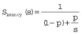

Jiu-Jitsu is a race, and if you make a mistake against someone better than you, you will never catch up [paraphrase].
Luis “Limao” Heredia (5-Time Pan American Brazilian Jiu-Jitsu Champion)
A common problem with production ML is needing to manage jobs. Examples could be as diverse as scraping the contents of a web site to generating descriptive statistics on a large CSV file to programmatically updating a supervised ML model. Managing jobs is one of the most complex problems in computer science, and there are many ways to do it. In addition, running jobs can get very expensive very quickly. In this section, several different AWS technologies will be covered, and examples will be given for each.
Having a strong understanding of Spot instances is essential for both production machine learning systems and for experimentation. Going through the official spot tutorial video at AWS (https://aws.amazon.com/ec2/spot/spot-tutorials/) is useful and may help with some of the content covered. Here is a little background on spot instances.
Typically, between 50 to 60 percent cheaper than reserved instances
Useful in many industries and use cases
Scientific research
Financial services
Video/imaging-processing companies
Web crawling/data processing
Functional testing and load testing
Deep learning and machine learning
There are four common architectures.
Hadoop/Elastic Map Reduce (EMR)
Check pointing (writing out results as they are processed out to disk)
Grid (e.g., StarCluster, http://star.mit.edu/cluster/docs/latest/index.html)
Queue-based
There is a bit of a learning curve in understanding how to reason about spot pricing. Some of the obstacles at the beginning are understanding what type of instance your jobs actually need. Even this is fraught with difficulty because, depending on the type of Spot architecture, there will be different bottlenecks: network in some, disk I/O or CPU in others. Additionally, to the jobs framework, the way the code is architected is itself an issue.
Amdahl’s law is best described as shown in Figure 9.1, which shows the limits of real-world parallelization. It states that speedup is limited by serial parts of the program. For example, the overhead in distributing the job may contain serial components. Perhaps the best example is to consider a job that takes 100 seconds, yet contains 5 seconds of a time.sleep() that a developer forgot about. When a job like this gets distributed, the theoretical maximum speedup would be 20 times. In the case of hidden sleep (it does happen), even a faster CPU or disk won’t do anything to improve the performance of that hidden sleep.
In Equation 9.1, the following are described:
Slatency (s) is the total speedup.
s is the speedup of the parallel portion.
p is the proportion of execution time that the part benefiting from improved resources originally used.
Equation 9.1 Amdahl’s Law Equation

If the serial component of the job is uncompressing something, then a faster CPU and higher disk I/O may help. Ultimately, theory aside, distributed jobs are hard, and the best way to figure out what types of Spot instances and architectures to use requires experimentation and instrumentation. Run a job, look at the metrics of the individual nodes, and consider the time it took to execute. Then experiment with different architectures and configurations, like EFS versus striped Elastic Block Storage (EBS) volumes shared out via Network File System (NFS).
I spent many years working in the film industry, and there is an argument to be made that film is the first “Big Data” industry. Film has been running distributed jobs frameworks for many more years before Hadoop, Big Data, ML, and AI were being discussed in jobs frameworks. Some things I discovered in film that are applicable to Big Data are that things always go wrong in distributed systems. Having incredible discipline about keeping jobs as simple as possible, while maintaining incredible instrumentation, is a key takeaway.
Coming full circle back to the topic of Spot pricing, it pays to know there are many ways to optimize the performance of distributed jobs. At first, the low-hanging fruit may be to just find cheap, high-powered instances, but thinking about other configurations and how to test them is critical for long-term success in developing jobs that work at the production level.
A great resource for comparing Spot prices with on-demand prices and looking at machine capabilities is at http://www.ec2instances.info/. The source code is also available in GitHub (https://github.com/powdahound/ec2instances.info). The authors scrape the AWS site, then compare Spot prices with reserved prices in one handy web page. This data was formatted and put into a CSV file for easy import into Jupyter Notebook.
Creating ML solutions that make it into production is a major focus of this book. The Unix philosophy embraces the concept of small tools that do one thing well. With production systems, it is often about not just the system, but the small tools developed along the way that enable the system to work. In the spirit of that philosophy, we’ll demonstrate a tool that finds Spot pricing in a region and also uses ML to recommend choices in the same cluster. To start, a new Jupyter Notebook is initialized with common boilerplate.
In [1]: import pandas as pd
...: import seaborn as sns
...: import matplotlib.pyplot as plt
...: from sklearn.cluster import KMeans
...: %matplotlib inline
...: from IPython.core.display import display, HTML
...: display(HTML("<style>.container \
{ width:100% !important; }</style>"))
...: import boto3
Next, an initial CSV file is loaded with some information grabbed from http://www.ec2instances.info/, and formatted slightly first in Excel.
In [2]: pricing_df = pd.read_csv("../data/ec2-prices.csv")
...: pricing_df['price_per_ecu_on_demand'] =\
pricing_df['linux_on_demand_cost_hourly']/\
pricing_df['compute_units_ecu']
...: pricing_df.head()
...:
Out[2]:
Name InstanceType memory_gb compute_units_ecu \
R3 High-Memory Large r3.large 15.25 6.5
M4 Large m4.large 8.00 6.5
R4 High-Memory Large r4.large 15.25 7.0
C4 High-CPU Large c4.large 3.75 8.0
GPU Extra Large p2.xlarge 61.00 12.0
vcpu gpus fpga enhanced_networking linux_on_demand_cost_hourly \
2 0 0 Yes 0.17
2 0 0 Yes 0.10
2 0 0 Yes 0.13
2 0 0 Yes 0.10
4 1 0 Yes 0.90
price_per_ecu_on_demand
0 0.026154
1 0.015385
2 0.018571
3 0.012500
4 0.075000
The instance names from this data set are passed into the Boto API to grab Spot instance pricing history.
In [3]: names = pricing_df["InstanceType"].to_dict()
In [6]: client = boto3.client('ec2')
...: response =client.describe_spot_price_history(\
InstanceTypes = list(names.values()),
...: ProductDescriptions = ["Linux/UNIX"])
In [7]: spot_price_history = response['SpotPriceHistory']
...: spot_history_df = pd.DataFrame(spot_price_history)
...: spot_history_df.SpotPrice =\
spot_history_df.SpotPrice.astype(float)
...:
The information that comes back from the API that is the most useful is the SpotPrice value, which can be used as the basis for both recommending similar instances and finding the best price per Elastic Compute Unit (ECU) and memory. Also, the results, which come back as JSON, are imported into a Pandas DataFrame. The SpotPrice column is then converted to a float to allow for later numerical manipulation.
In [8]: spot_history_df.head()
Out[8]:
AvailabilityZone InstanceType ProductDescription SpotPrice \
0 us-west-2c r4.8xlarge Linux/UNIX 0.9000
1 us-west-2c p2.xlarge Linux/UNIX 0.2763
2 us-west-2c m3.2xlarge Linux/UNIX 0.0948
3 us-west-2c c4.xlarge Linux/UNIX 0.0573
4 us-west-2a m3.xlarge Linux/UNIX 0.0447
Timestamp
0 2017-09-11 15:22:59+00:00
1 2017-09-11 15:22:39+00:00
2 2017-09-11 15:22:39+00:00
3 2017-09-11 15:22:38+00:00
4 2017-09-11 15:22:38+00:00
Two DataFrames are merged, and new columns are created that are the SpotPrice over the memory and ECU (compute units). A describe operation in Pandas over three of the columns shows the characteristics of the newly created DataFrame.
In [16]: df = spot_history_df.merge(\
pricing_df, how="inner", on="InstanceType")
...: df['price_memory_spot'] =\
df['SpotPrice']/df['memory_gb']
...: df['price_ecu_spot'] =\
df['SpotPrice']/df['compute_units_ecu']
...: df[["price_ecu_spot", "SpotPrice",\
"price_memory_spot"]].describe()
...:
Out[16]:
price_ecu_spot SpotPrice price_memory_spot
count 1000.000000 1000.000000 1000.000000
mean 0.007443 0.693629 0.005041
std 0.029698 6.369657 0.006676
min 0.002259 0.009300 0.000683
25% 0.003471 0.097900 0.002690
50% 0.004250 0.243800 0.003230
75% 0.006440 0.556300 0.006264
max 0.765957 133.380000 0.147541
Visualizing the data will make things more clear. Doing a groupby operation by AWS InstanceType allows for a median to be performed for each InstanceType.
In [17]: df_median = df.groupby("InstanceType").median()
...: df_median["InstanceType"] = df_median.index
...: df_median["price_ecu_spot"] =\
df_median.price_ecu_spot.round(3)
...: df_median["divide_SpotPrice"] = df_median.SpotPrice/100
...: df_median.sort_values("price_ecu_spot", inplace=True)
A Seaborn bar plot is created that overlays two plots on top of each other. This is an excellent technique to show the contrast of two related columns. The price_ecu_spot, the ratio of spot price versus compute units compares against the raw SpotPrice. This is shown in Figure 9.2, and the sorted DataFrame allows a clear pattern to emerge; there are some great values for thrifty distributed computing users. In this particular region, us-west-2, the r4.large style instances are the best deal if only ECU is considered and both the Spot price and the Spot price, ECU ratio is considered. One trick to improve visibility was to divide the SpotPrice by 100.
...: plt.subplots(figsize=(20,15))
...: ax = plt.axes()
...: sns.set_color_codes("muted")
...: sns.barplot(x="price_ecu_spot",\
y="InstanceType", data=df_median,
...: label="Spot Price Per ECU", color="b")
...: sns.set_color_codes("pastel")
...: sns.barplot(x="divide_SpotPrice",\
y="InstanceType", data=df_median,
...: label="Spot Price/100", color="b")
...:
...: # Add a legend and informative axis label
...: ax.legend(ncol=2, loc="lower right", frameon=True)
...: ax.set(xlim=(0, .1), ylabel="",
...: xlabel="AWS Spot Pricing by Compute Units (ECU)")
...: sns.despine(left=True, bottom=True)
...:
<matplotlib.figure.Figure at 0x11383ef98>
There is enough information here that it makes sense to turn this into a command-line tool that will be useful in making decisions about what type of Spot instances to provision. To create a new command-line tool, a new module is created in the paws directory, and the previous code is wrapped up into functions.
def cluster(combined_spot_history_df, sort_by="price_ecu_spot"):
"""Clusters Spot Instances"""
df_median = combined_spot_history_df.\
groupby("InstanceType").median()
df_median["InstanceType"] = df_median.index
df_median["price_ecu_spot"] = df_median.price_ecu_spot.round(3)
df_median.sort_values(sort_by, inplace=True)
numerical_df = df_median.loc[:,\
["price_ecu_spot", "price_memory_spot", "SpotPrice"]]
scaler = MinMaxScaler()
scaler.fit(numerical_df)
scaler.transform(numerical_df)
k_means = KMeans(n_clusters=3)
kmeans = k_means.fit(scaler.transform(numerical_df))
df_median["cluster"]=kmeans.labels_
return df_median
def recommend_cluster(df_cluster, instance_type):
"""Takes a instance_type and finds
a recommendation of other instances similar"""
vals = df_cluster.loc[df_cluster['InstanceType'] ==\
instance_type]
cluster_res = vals['cluster'].to_dict()
cluster_num = cluster_res[instance_type]
cluster_members = df_cluster.loc[df_cluster["cluster"] ==\
cluster_num]
return cluster_members
There is a cluster function, which scales the data and takes the price_ecu_spot, price_memory_spot, and SpotPrice and makes three clusters. The recommend cluster function works under the assumption that instances in the same cluster are a likely substitute. A brief peak at the data, in Jupyter, shows there do appear to be three distinct clusters. Cluster 1 has an almost ridiculous amount of memory and a corresponding high SpotPrice; there is only 1 member in this cluster. Cluster 2 has the lowest memory, and 11 instances in it. Cluster 1 has the most members at 33 and is marginally more expensive, but has double the memory on average. These assumptions can now be turned into a useful command-line tool that allows a user to pick whether she wants low, medium, or high memory Spot instances, and shows her how much she would pay.
In [25]: df_median[["price_ecu_spot", "SpotPrice",\
"price_memory_spot", "memory_gb","cluster"]].\
groupby("cluster").median()
Out[25]:
price_ecu_spot SpotPrice price_memory_spot memory_gb
cluster
0 0.005 0.2430 0.002817 61.0
1 0.766 72.0000 0.147541 488.0
2 0.004 0.1741 0.007147 30.0
In [27]: df_median[["price_ecu_spot", "SpotPrice",\
"price_memory_spot", "memory_gb","cluster"]].\
groupby("cluster").count()
Out[27]:
price_ecu_spot SpotPrice price_memory_spot memory_gb
cluster
0 33 33 33 33
1 1 1 1 1
2 11 11 11 11
The last step to create the command-line tool is to use the same pattern shown in the chapter: import the library, use the click framework to manage options, and use click.echo to give back the results. The recommend command takes a –instance flag, which then returns results for all members of that cluster.
@cli.command("recommend")
@click.option('--instance', help='Instance Type')
def recommend(instance):
"""Recommends similar spot instances uses kNN clustering
Example usage:
./spot-price-ml.py recommend --instance c3.8xlarge
"""
pd.set_option('display.float_format', lambda x: '%.3f' % x)
pricing_df = setup_spot_data("data/ec2-prices.csv")
names = pricing_df["InstanceType"].to_dict()
spot_history_df = get_spot_pricing_history(names,
product_description="Linux/UNIX")
df = combined_spot_df(spot_history_df, pricing_df)
df_cluster = cluster(df, sort_by="price_ecu_spot")
df_cluster_members = recommend_cluster(df_cluster, instance)
click.echo(df_cluster_members[["SpotPrice",\
"price_ecu_spot", "cluster", "price_memory_spot"]])
In action, the output looks like this.
→ ✗ ./spot-price-ml.py recommend --instance c3.8xlarge
SpotPrice price_ecu_spot cluster price_memory_spot
InstanceType
c3.2xlarge 0.098 0.003 0 0.007
c3.4xlarge 0.176 0.003 0 0.006
c3.8xlarge 0.370 0.003 0 0.006
c4.4xlarge 0.265 0.004 0 0.009
cc2.8xlarge 0.356 0.004 0 0.006
c3.large 0.027 0.004 0 0.007
c3.xlarge 0.053 0.004 0 0.007
c4.2xlarge 0.125 0.004 0 0.008
c4.8xlarge 0.557 0.004 0 0.009
c4.xlarge 0.060 0.004 0 0.008
hi1.4xlarge 0.370 0.011 0 0.006
There are many levels to working with Spot instances. This section will tackle a few of the layers, starting with an easy example and working forward from there. Spot instances are the life’s blood of ML on AWS. Understanding how to use them correctly can make or break a company, a project, or a hobby. A recommended best practice is to create self-expiring Spot instances that terminate automatically before an hour is up. This is the hello world of launching Spot instances—at least, the recommended hello world.
In this first section, the click library is imported along with Boto and the Base64 library. The user data that gets sent to AWS needs to be Base64 encoded, and this will be shown in a further snippet. Note that if the line with boto.set_stream_logger is uncommented, there will be very verbose logging messages (that can be very helpful when trying out options).
#!/usr/bin/env python
"""Launches a test spot instance"""
import click
import boto3
import base64
from sensible.loginit import logger
log = logger(__name__)
#Tell Boto3 To Enable Debug Logging
#boto3.set_stream_logger(name='botocore')
In the next section, the command-line tool is set up and the user data options are configured with an automatic termination. This is a great trick that Eric Hammond (https://www.linkedin.com/in/ehammond/) invented. Essentially, right when the machine launches, a job is set up using the “at” facility, which terminates the instance. This trick is expanded in this command-line tool, which allows a user to set the duration if he wants to change the default of 55 minutes.
@click.group()
def cli():
"""Spot Launcher"""
def user_data_cmds(duration):
"""Initial cmds to run, takes duration for halt cmd"""
cmds = """
#cloud-config
runcmd:
- echo "halt" | at now + {duration} min
""".format(duration=duration)
return cmds
In the following options, everything is set as a default, which only requires the user to specify the launch command. The options are then passed into the Spot request API call to the Boto3 client.
@cli.command("launch")
@click.option('--instance', default="r4.large", help='Instance Type')
@click.option('--duration', default="55", help='Duration')
@click.option('--keyname', default="pragai", help='Key Name')
@click.option('--profile',\
default="arn:aws:iam::561744971673:instance-profile/admin",
help='IamInstanceProfile')
@click.option('--securitygroup',\
default="sg-61706e07", help='Key Name')
@click.option('--ami', default="ami-6df1e514", help='Key Name')
def request_spot_instance(duration, instance, keyname,
profile, securitygroup, ami):
"""Request spot instance"""
user_data = user_data_cmds(duration)
LaunchSpecifications = {
"ImageId": ami,
"InstanceType": instance,
"KeyName": keyname,
"IamInstanceProfile": {
"Arn": profile
},
"UserData": base64.b64encode(user_data.encode("ascii")).\
decode('ascii'),
"BlockDeviceMappings": [
{
"DeviceName": "/dev/xvda",
"Ebs": {
"DeleteOnTermination": True,
"VolumeType": "gp2",
"VolumeSize": 8,
}
}
],
"SecurityGroupIds": [securitygroup]
}
run_args = {
'SpotPrice' : "0.8",
'Type' : "one-time",
'InstanceCount' : 1,
'LaunchSpecification' : LaunchSpecifications
}
msg_user_data = "SPOT REQUEST DATA: %s" % run_args
log.info(msg_user_data)
client = boto3.client('ec2', "us-west-2")
reservation = client.request_spot_instances(**run_args)
return reservation
if __name__ == '__main__':
cli()
When the command-line tool is run with help, the output shows the options that can be changed. Note that there isn’t an option for price, for a couple of reasons. First, the Spot price is market driven, so the request will always use the lowest price. Second, this can easily be added using the same technique shown.
→ ./spot_launcher.py launch --help
Usage: spot_launcher.py launch [OPTIONS]
Request spot instance
Options:
--instance TEXT Instance Type
--duration TEXT Duration
--keyname TEXT Key Name
--profile TEXT IamInstanceProfile
--securitygroup TEXT Key Name
--ami TEXT Key Name
--help Show this message and exit.
When launching a Spot instance with a new duration, say, 1 hour 55 minutes, it can be modified by setting the --duration option.
→✗ ./spot_launcher.py launch --duration 115
2017-09-20 06:46:53,046 - __main__ - INFO –
SPOT REQUEST DATA: {'SpotPrice': '0.8', 'Type':
'one-time', 'InstanceCount': 1, 'LaunchSpecification':
{'ImageId': 'ami-6df1e514', 'InstanceType':
'r4.large', 'KeyName': 'pragai', 'IamInstanceProfile':
{'Arn': 'arn:aws:iam::561744971673:instance-profile/admin'},
.....
The instance can then be found by going to the EC2 dashboard for the region in which it was launched. For this request, this would be https://us-west-2.console.aws.amazon.com/ec2/v2/home?region=us-west-2#Instances:sort=ipv6Ips in your AWS Console. This is shown in Figure 9.3, where the connection information to ssh into the machine are provided.
Using that information, an ssh connection is created to the Spot instance.
→✗ ssh -i "~/.ssh/pragai.pem" ec2-user@52.26.11.129
The authenticity of host '52.26.11.129 (52.26.11.129)'
ECDSA key fingerprint is SHA256:lTaVeVv0L7GE...
Are you sure you want to continue connecting (yes/no)? yes
Warning: Permanently added '52.26.11.129'
__| __|_ )
_| ( / Amazon Linux AMI
___|\___|___|
https://aws.amazon.com/amazon-linux-ami/2017.03-release-notes/
9 package(s) needed for security, out of 13 available
Run "sudo yum update" to apply all updates.
[ec2-user@ip-172-31-8-237 ~]$
From the Amazon Linux shell, the uptime command will inform how long the instance has been running. This instance has been running for 1 hour 31 minutes and will run for a little over 20 more minutes before it terminates.
[ec2-user@ip-172-31-8-237 ~]$ uptime
15:18:52 up 1:31, 1 user, load average: 0.00, 0.00, 0.00
Switching into the root user, the job to halt the machine can be verified.
[ec2-user@ip-172-31-8-237 ~]$ sudo su -
[root@ip-172-31-8-237 ~]# at -l
1 2017-09-20 15:42 a root
Next, the actual command that will be run at that time in the future can be inspected.
#!/bin/sh
# atrun uid=0 gid=0
# mail root 0
umask 22
PATH=/sbin:/usr/sbin:/bin:/usr/bin; export PATH
RUNLEVEL=3; export RUNLEVEL
runlevel=3; export runlevel
PWD=/; export PWD
LANGSH_SOURCED=1; export LANGSH_SOURCED
LANG=en_US.UTF-8; export LANG
PREVLEVEL=N; export PREVLEVEL
previous=N; export previous
CONSOLETYPE=serial; export CONSOLETYPE
SHLVL=4; export SHLVL
UPSTART_INSTANCE=; export UPSTART_INSTANCE
UPSTART_EVENTS=runlevel; export UPSTART_EVENTS
UPSTART_JOB=rc; export UPSTART_JOB
cd / || {
echo 'Execution directory inaccessible' >&2
exit 1
}
${SHELL:-/bin/sh} << 'marcinDELIMITER6382915b'
halt
There are some exciting changes from Amazon that make this style of research and development even more appealing. As of October 3, 2017, Amazon is offering billing by the second, with 1-minute minimums. This absolutely changes the game for how Spot instances can be used. One of the most obvious changes is that it is now practical to simply use Spot instances to run ad hoc functions, and when they are finished, in say 30 seconds, the instance can be shut down.
The next step to take beyond this simple Spot launcher for many production projects is to get production software deployed onto the instance being launched. There are many ways to accomplish this.
Passing a shell script to an instance on launch, which is the method just shown. You can see some more complicated examples from the official AWS docs (http://docs.aws.amazon.com/AWSEC2/latest/UserGuide/user-data.html).
Modifying the AMI itself, then using that snapshot on launch. There are a couple of ways to do this. One is to just launch an instance, configure it, then save it. Another method is to use the AMI Builder Packer (https://www.packer.io/docs/builders/amazon-ebs.html). When the instance is launched, the machine will already have the software needed. This approach could also be used in conjunction with other approaches, say a prebuilt AMI, plus custom shell script.
Use EFS upon boot to store both data and software and to link binaries and scripts into the environment. This is an approach that was very common in the NFS days of Solaris and other Unix systems, and it is a wonderful way to customize the environment of Spot instances. The EFS volume can be updated via a build server with rsync or a copy.
Using AWS Batch with Docker containers is also a viable option.
A more sophisticated Spot launcher would install some software on the system, pull in the source code from a repository, run that source code, and the put the output of the code in, say, S3. To do this, a couple of pieces will need to be changed. First, the buildspec.yml file will need to be modified so that it copies the source code to S3. Note that the sync command with --delete is useful in that it intelligently syncs just the files that have changed and deletes files that no longer exist.
post_build:
commands:
- echo "COPY Code TO S3"
- rm -rf ~/.aws
- aws s3 sync $CODEBUILD_SRC_DIR \
s3://pragai-aws/master --delete
Typically, with build commands like this, I run them locally to make sure I understand what they are doing. Next, Python and a virtual environment will need to be installed as the machine is launching. This can be accomplished by modifying the runcmd’s passed to the instance upon boot. The first modified section grabs Python and installs it along with the packages Python needs to install. Note that ensurepip is used because this will allow the Makefile to just work.
cmds = """
#cloud-config
runcmd:
- echo "halt" | at now + {duration} min
- wget https://www.python.org/ftp/\
python/3.6.2/Python-3.6.2.tgz
- tar zxvf Python-3.6.2.tgz
- yum install -y gcc readline-devel\
sqlite-devel zlib-devel openssl-devel
- cd Python-3.6.2
- ./configure --with-ensurepip=install && make install
Next, the source code that was synced to S3 is pulled down locally, which is a handy way to deploy code to an instance. It is very fast and uses Git ssh keys, and passwords are avoided since the Spot instance has role privileges to communicate with S3. After the S3 data is copied locally, it is sourced using virtualenv and then the ML Spot prices tool is run and the output is sent to S3.
- cd ..
- aws s3 cp s3://pragai-aws/master master\
--recursive && cd master
- make setup
- source ~/.pragia-aws/bin/activate && make install
- ~/.pragia-aws/bin/python spot-price-ml.py\
describe > prices.txt
- aws s3 cp prices.txt s3://spot-jobs-output
""".format(duration=duration)
return cmds
A natural next step is to take the prototype and make it more modular so that any arbitrary ML operation could be executed as a script, not just the hard-coded example. In Figure 9.4, a high-level overview of this pipeline shows how this process works in practice.
This chapter looked at one of the details of ML that is often neglected—actually running jobs on AWS. Several important concerns were tackled with Spot instances: finding the right instance size, finding out the most economical way to use them, installing software on them, and deploying code.
Recent changes to AWS that allow by-the-second billing and the addition of services like AWS Batch make it a fierce competitor in the war of the clouds. The combination of per-second billing and Spot pricing has never been seen before. Creating ML systems in production on top of infrastructure that AWS has created is a very safe choice, and controlling costs in research and development is easier than ever.
Further directions that could be explored to make this AI solution even more practical would be to trigger the launch of jobs, perhaps on AWS batch, that listen to price signals and use linear optimization in combination with clustering to dynamically figure out the best time and combinations of machines to run on. An even further advancement could be to look at combining this with technologies like Nomad from HashiCorp (https://www.nomadproject.io/) to dynamically run jobs on all clouds in the form of Docker images.